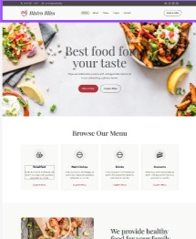
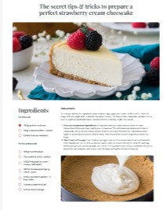
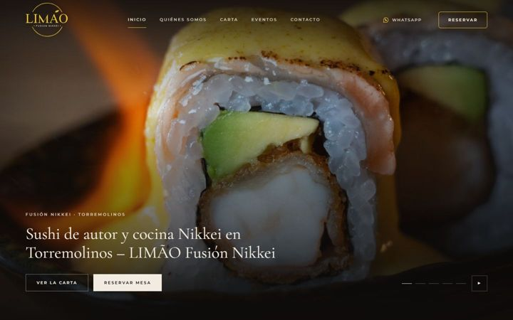

Liderazgo
Más de 8 años liderando equipos, desarrollando personas y tomando decisiones bajo presión.
Oliver Vega
Hola, soy
Desarrollador web Junior
Estudiante de desarrollo web, aprendiendo a crear páginas modernas, funcionales y adaptadas a cualquier pantalla.
Ahora mismo trabajo con HTML, CSS y Git.
Mucho más que código...
Con más de ocho años liderando equipos, gestionando negocios y trabajando en empresas internacionales. Hoy aplico esa experiencia para crear aplicaciones web modernas, funcionales y orientadas a resolver problemas reales.
Más de 8 años liderando equipos, desarrollando personas y tomando decisiones bajo presión.
Puestos de responsabilidad en Reino Unido, España y Portugal en CK, Adidas y Primark.
Store Manager en Calvin Klein antes de abrir mi propio restaurante Nikkei.
Aplicando años de liderazgo y experiencia empresarial al desarrollo web.

Landing page para un restaurante con menú, información del local y diseño adaptado a móvil.

Blog de recetas detalladas con ingredientes, cantidades e instrucciones junto con sus imágenes.

Nueva web para un restaurante nikkei de Torremolinos, con carta, eventos, reservas y contacto. Está terminada en local y todavía sin publicar. La he hecho con ayuda de IA: Claude (Claude Code) para el código y ChatGPT y Canva para las ideas de diseño. Yo me he encargado del contenido, las fotos y de revisar cada versión.
Plataforma de gestión para restaurantes, ahora en desarrollo. Calcula el coste de cada receta (escandallos) a partir de ingredientes, proveedores y precios. La estoy creando con ayuda de IA (Claude Code), aportando mi experiencia en hostelería.